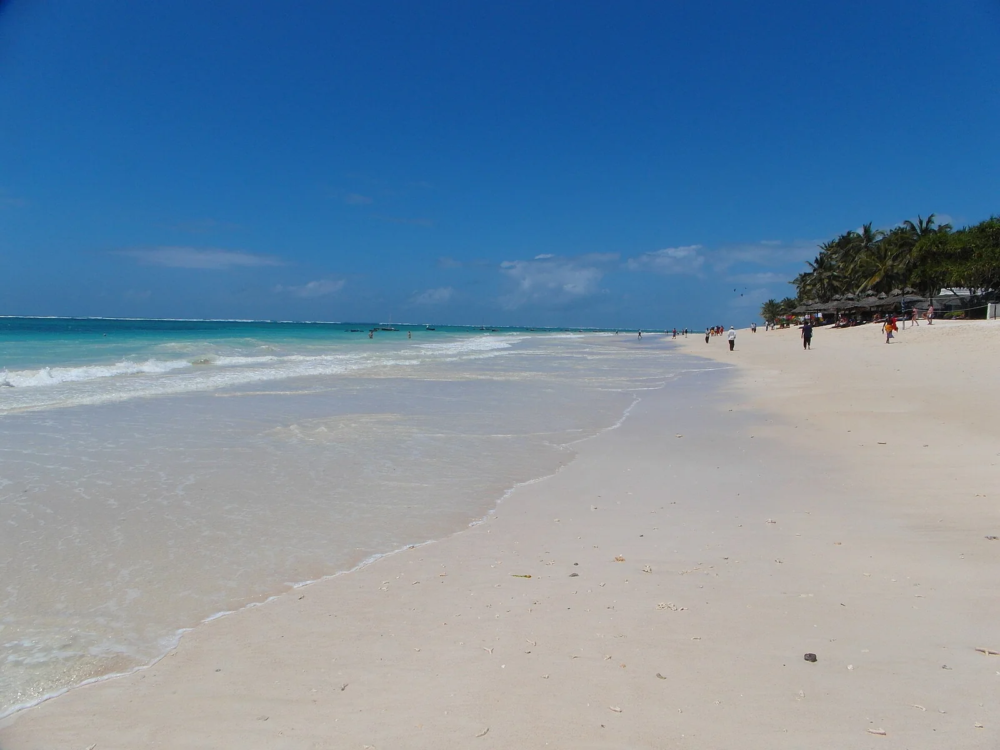

Diani Beach
Côte sud, Kenya · kitesurf, snorkeling, plongée

Une longue côte de sable au sud de Mombasa, tournée vers l’océan Indien. Les centres de Diani proposent des sorties sous l’eau et des activités de glisse selon les conditions du jour.
- Lieu
- Côte sud, Kenya
- Niveau
- Variable selon les conditions
- Activités
- kitesurf, snorkeling, plongée
- Type d'eau
- Mer / océan
- Coordonnées
- -4.30, 39.59 (position approximative du secteur)
Ouvrir dans Ocean Buddy Télécharger sur l'App Store
Source : Wikipédia · géographie du lieu.